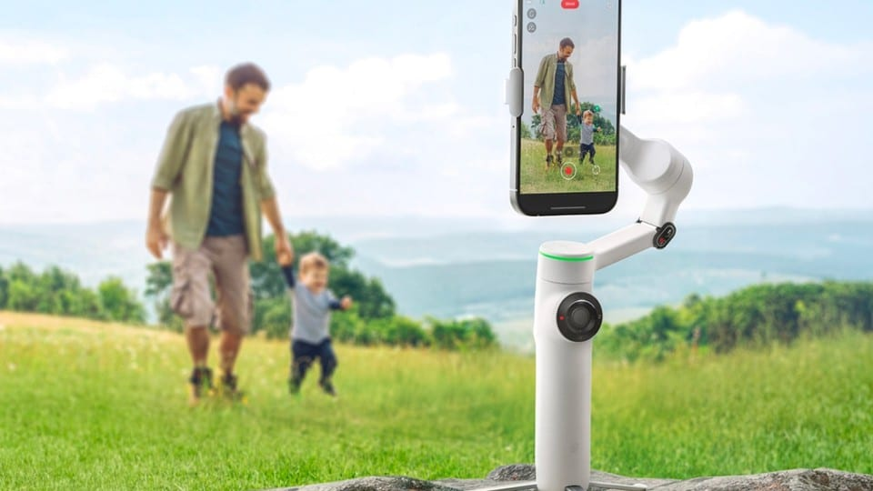

Designed around real routines
A useful product earns its place by making a familiar task feel easier. The difference often comes from quiet details: a comfortable grip, a clear control, or a surface that is simple to clean.
Imagine a small team testing early prototypes around the office. Each person notices something different, and those observations become the next round of improvements.
Materials that feel right
Texture, weight, and finish shape the first impression. A balanced material palette can make a product feel approachable while supporting the way it will be used every day.
Making the final choice
The best design decisions connect appearance with purpose. Start with the everyday task, test the details, and keep the experience clear from the first use.

Find ideas for your next project
Discover more product stories, practical guides, and thoughtful design ideas from the Ecolitea journal.
Explore the journal